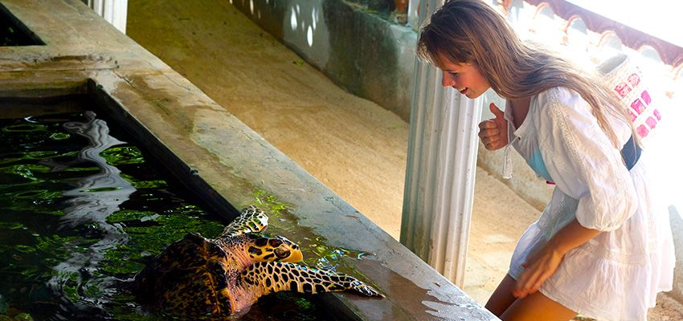

An Introduction to the Bentota Turtle Hatchery
The Bentota Turtle Hatchery, located in the beautiful coastal town of Bentota in Sri Lanka, is a conservation project dedicated to protecting and preserving sea turtles. This hatchery plays a vital role in the conservation efforts of these magnificent creatures, which are considered endangered or critically endangered species. This hatchery serves as a haven for these magnificent creatures, playing a significant role in their survival and conservation. With a dedicated team of staff and volunteers, the hatchery actively engages in rescuing sea turtle eggs, providing a safe environment for nesting females, and nurturing hatchlings until they are ready for release into the ocean. Through their efforts, the Bentota Turtle Hatchery not only safeguards sea turtles from natural and human-induced threats but also educates visitors and local communities about the importance of marine conservation and the need to preserve these endangered species and their habitats.
Visiting the Bentota Turtle Hatchery offers a unique and educational experience for tourists. It provides an opportunity to witness firsthand the incredible life cycle of sea turtles, from the collection and relocation of eggs to the nurturing and release of hatchlings. Visitors can learn about the different species of sea turtles found in Sri Lanka, their behaviors, and the conservation challenges they face. Participating in the release of hatchlings into the ocean is a particularly memorable and rewarding experience, as it allows individuals to actively contribute to the conservation efforts and create a positive impact on the survival of these remarkable creatures. The Bentota Turtle Hatchery stands as a symbol of Sri Lanka's commitment to marine conservation and serves as a beacon of hope for the future of sea turtles in the region.
Primary Objectives of the Bentota Turtle Hatchery
Established with the aim of ensuring the survival of sea turtles, the Bentota Turtle Hatchery serves as a sanctuary for sea turtle eggs and hatchlings. The project focuses on rescuing eggs and nesting females, providing them a safe environment for nesting, and safeguarding the fragile hatchlings until they are ready to be released into the ocean.
One of the primary objectives of the hatchery is to protect sea turtle nests from natural threats, such as predators and human encroachment. This is achieved by collecting eggs from vulnerable nests along the coast and relocating them to the protected area of the hatchery. The dedicated staff at the hatchery carefully monitor and maintain the temperature and humidity conditions required for the successful incubation of the eggs.
Once the eggs hatch, the hatchlings are kept in tanks where they are nurtured until they reach a certain size and strength, ensuring their survival in the wild. Visitors to the Bentota Turtle Hatchery have the opportunity to learn about the different species of sea turtles found in Sri Lanka, including the Olive Ridley, Green, Hawksbill, Loggerhead, and Leatherback turtles. The hatchery also provides educational information on the life cycle, behavior, and conservation status of these incredible creatures.
In addition to its conservation efforts, the Bentota Turtle Hatchery actively engages in public awareness campaigns and outreach programs to educate local communities and tourists about the importance of sea turtle conservation. They emphasize the need to protect the turtles' natural habitats, reduce pollution, and avoid harmful activities that endanger these species.
Things you can do
- Learn about Sea Turtles: The hatchery provides educational displays and information about different sea turtle species, their life cycles, habitats, and conservation efforts. You can learn fascinating facts about these incredible creatures and gain a deeper understanding of the challenges they face.
- Observe Turtle Rehabilitation: The hatchery often houses injured or disabled sea turtles that are undergoing rehabilitation. You can observe the dedicated staff caring for these turtles, learn about their individual stories, and witness the rehabilitation process firsthand.
- Hatchling Releases: One of the most exciting experiences at the hatchery is participating in hatchling releases. If you're lucky, you may have the chance to release baby turtles into the ocean. This hands-on activity allows you to actively contribute to the conservation efforts and witness the beginning of a sea turtle's journey.
- Support Conservation Efforts and Volunteer Opportunities: The Bentota Turtle Hatchery relies on donations and support to continue its important work. You can contribute to the conservation efforts by making a donation or purchasing souvenirs from the hatchery's gift shop. Your support directly helps fund the rescue, care, and release of sea turtles. If you're passionate about marine conservation, the hatchery may offer volunteer programs or opportunities to get involved. You can inquire about volunteering and contribute your time and skills to help with various tasks such as feeding turtles, maintaining tanks, or assisting with educational activities.
- Educational Tours and Photography: The hatchery offers guided tours where knowledgeable staff members provide detailed information about sea turtles, their habitats, and the hatchery's conservation initiatives. These tours are a great way to enhance your understanding of sea turtle conservation and the hatchery's role in protecting these endangered species. The Bentota Turtle Hatchery provides excellent opportunities for photography enthusiasts. Capture memorable moments such as hatchlings emerging from their nests, the rehabilitation of injured turtles, or the serene beauty of the coastal surroundings. Just remember to be respectful of the turtles and follow any guidelines provided by the hatchery.
By visiting the Bentota Turtle Hatchery, tourists not only gain an understanding of the challenges faced by sea turtles but also become ambassadors for their protection. This conservation project serves as a significant landmark in Sri Lanka's efforts to preserve its rich biodiversity and contribute to global sea turtle conservation. Overall, the Bentota Turtle Hatchery is a remarkable initiative dedicated to the conservation of sea turtles. Through its efforts in protecting nests, incubating eggs, nurturing hatchlings, and raising awareness, the hatchery plays a crucial role in safeguarding these endangered species and their habitats. It offers an educational and interactive experience for visitors while promoting the importance of marine conservation.